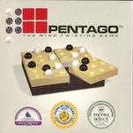
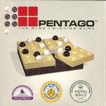

|  |

|
History
Pentago was invented in 2004 in Sweden by the company Mindtwister. It has won various awards including the Game of the Year 2005 in Sweden and the Mensa Select Award in 2006.
Game Play
The Pieces:
There are two different pieces in Pentago - red or black. There are 18 of each piece (making a total of 36 pieces) for the 6x6 grid game.
Rules:
To move: Each player takes turns making one valid move.
Valid Moves:
Place a piece on the game board and twist the game blocks. A player can twist any of the game blocks, regardless of which block the player placed his or her marble on. During the beginning of the game, with neutral game blocks (one with no pieces on it or a piece in the center) on the board, a player does not need to twist a block because it will have no effect on the position of the game.
To win: Be the first player to have five (or a specified number before beginning the game) pieces in a row horizontally, vertically, or diagonally. This can span multiple game blocks.
The players alternate making legal moves. A tie occurs when both players have played all of their marbles and nobody has a winning position.
Variants:
Misere: Force the opponent to get five pieces in a row.
Pictures:
|  |
|
References:
Pentago. Pentago. 27 Feb 2007. <http://www.pentago.com/home.html>.
Board Game Geek. Pentago. 27 Feb 2007. <http://www.boardgamegeek.com/game/19841>.